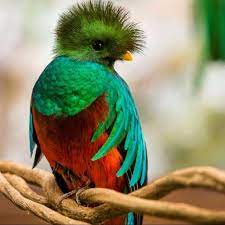
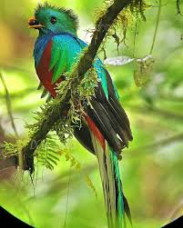

|  |
El resplandeciente quetzal (Pharomachrus mocinno) ha sido considerado el ave más hermosa de América. Los intensos tonos del plumaje del macho justifican esta opinión. Su cuerpo es de color iridiscente y varía, según la luz, desde el dorado hasta el azul y el verde esmeralda, en contraste con el rojo del vientre. En la cabeza tiene una cresta corta y redonda, y el pico amarillo. La cola, vista desde abajo, es casi toda blanca, y en la parte de arriba está cubierta por larguísimas plumas de color verde, que llegan a alcanzar 90 centímetros, cuando el cuerpo del ave mide aproximadamente 35 centímetros. Ésta es otra de las características morfológicas y estéticas que distinguen al quetzal. |
El quetzal forma parte de la familia de los trogones (Trogonidae), de la cual existen nueve especies en el territorio mexicano. Son aves típicas de los bosques tropicales y se les encuentra generalmente solas o en parejas. Los quetzales habitan exclusivamente en los Altos de Chiapas, en el sudeste mexicano, y en los bosques de niebla de Guatemala. Se alimentan de frutos, principalmente de aguacates silvestres, así como de insectos que atrapan al vuelo y de pequeños animales vertebrados. Los vuelos de cortejo de esta ave son uno de los más bellos espectáculos naturales. Durante febrero y marzo, época de apareamiento, los quetzales machos atraen a la hembra realizando un sinfín de piruetas y dibujando en el aire fantásticas figuras con la oscilación de su larga cola; a lo lejos, parece el vuelo de una serpiente emplumada.
Las parejas construyen su nido dentro de los troncos de árboles podridos, o bien ocupan nidos abandonados por los pájaros carpinteros u otras aves. La hembra generalmente pone dos huevos de color azul pálido. La labor de incubación compete por igual a macho y hembra. Cuando el macho está dentro del nido, deja sus largas plumas colgando fuera del tronco, las cuales se confunden con el exuberante follaje que cubre los árboles de su hábitat, protegiendo así al nido de los depredadores.
El quetzal estuvo estrechamente ligado a las culturas mesoamericanas como símbolo de la abundancia, la fertilidad y la vida. Penachos, estandartes e innumerables atuendos de las culturas maya y mexica eran confeccionados con las resplandecientes plumas del quetzal, las cuales alcanzaban un extraordinario valor dentro del comercio establecido por estas culturas. Los quetzales no eran sacrificados para obtener sus plumas; de hecho, había pena de muerte para quien matara uno. Es por esto que se capturaban vivos, se les despojaba de las largas plumas de la cola y eran dejados de nuevo en libertad. De esta manera daban oportunidad a que el quetzal recuperara sus plumas en la siguiente muda.
